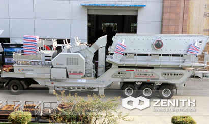
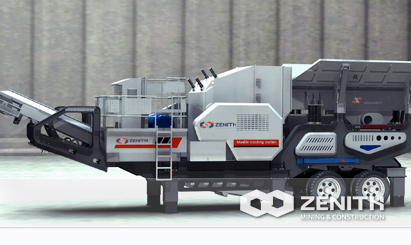
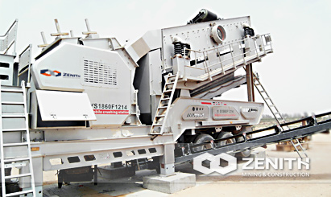
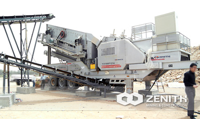

- 
- 
- 
- 
Mobile Impact Crusher
Mobile Impact Crusher is the newest mobile crushing plant equipping with Hydraulic impact crusher or traditional impact crusher. It is suitable as primary crusher and secondary crusher for limestone, marble stone, granite, construction waste and demolished concrete. Zenith heavy duty mobile impact crushin plant features with high crushing capacity and low weight, which can be used to crush small quantities of raw materials with flexible and highly economical operation.
Widely Application of mobile Impact Crusher
Mobile impact crusher is mostly used for medium and fine crushing process in stone crusher plant. It well fits for crushing numerous medium and soft materials, such as limestone, feldspar, calcite, talc, barite, clay, tombar thite, kaolin, gypsum, graphite, etc.
mobile Impact Crusher Benefits and advantages
- Easy to adjust and collocate.
- Integrated machine set. The vibrating feeder and vibrating screen are combined with impact crusher;
- High flexibility. So it saves much time.
- Low transportation cost. Mobile crushing plant avoids the redundant procedure of transporting materials away from the site and then crushing.
- Reliable performance and convenient maintenance with good adaptability.
The tacnology data
| Model | Car Body | Feeder | Crusher | Belt Conveyor (standard configuration) | Engine (Optional) | Overall dimension (mm) | ||||
|---|---|---|---|---|---|---|---|---|---|---|
| Model | Feeding Size (mm) | Power (kw) | Model | Feeding Size (mm) | Power (kw) | Size(m) | Power (kw) | |||
| YG938FW1214Ⅱ | Two-Spindle | GZD960×3800 | 500 | 6-11 | PFW1214II | 500 | 4-132 | B800×8.5 | 360 | 12600×2550×3870 |
| YG1142FW315Ⅱ | Three-Spindle | GZD1100×4200 | 580 | 6-15 | PFW1315II | 600 | 4-160 | B1000×9.5 | 400 | 13900×2750×4180 |
| YG1349FW318Ⅱ | Three-Spindle | GZD1300×4900 | 750 | 6-22 | PFW1318II | 700 | 4-200 | B1200×10.5 | 500 | 15450×2950×4180 |
| Y3S1860F1214-N | Three-Spindle | 3YK1860 | ≤400 | 4-22 | PF1214 | 350 | 6-132 | B800×8.5 | 360 | 14300×2830×4380 |
| Y3S2160F1315-N | Three-Spindle | 3YK2160 | ≤400 | 4-30 | PF1315 | 350 | 6-200 | B1000×8.5 | 500 | 14300×3190×4380 |
| Y3S1860FW214Ⅲ | Three-Spindle | 3YK1860 | ≤400 | 4-22 | PFW1214Ⅲ | 250 | 4-132 | B800×8.5 | 360 | 14300×2830×4380 |
| Y3S2160FW315Ⅲ | Three-Spindle | 3YK2160 | ≤400 | 4-30 | PFW1315Ⅲ | 300 | 4-160 | B1000×8.5 | 400 | 14300×3190×4380 |